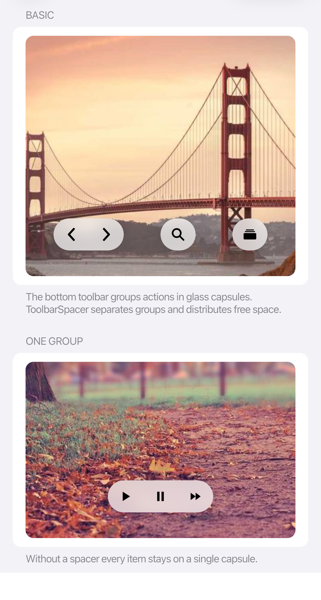
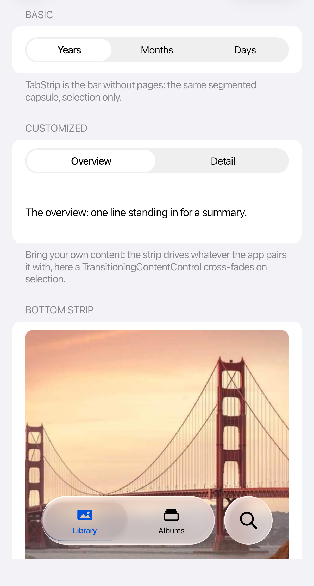
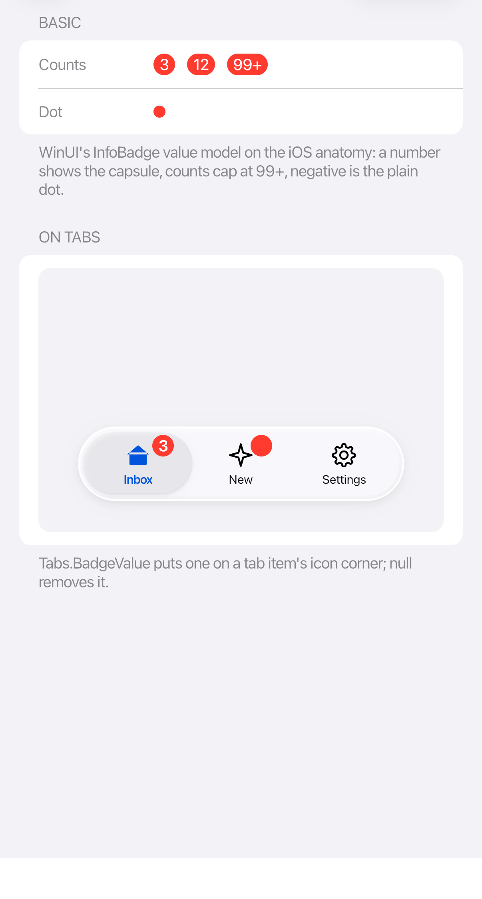

Toolbars, tabs, and badges
 |
 |
 |
Toolbars
Use toolbars for actions. Consecutive items share one glass capsule; ToolbarSpacer separates groups and fills the space between them.
<cupertino:CupertinoToolbar>
<Button ToolTip.Tip="Back">
<cupertino:CupertinoIcon Glyph="chevron.left" Size="20" />
</Button>
<Button ToolTip.Tip="Forward">
<cupertino:CupertinoIcon Glyph="chevron.right" Size="20" />
</Button>
<cupertino:ToolbarSpacer />
<Button ToolTip.Tip="Search">
<cupertino:CupertinoIcon Glyph="magnifyingglass" Size="20" />
</Button>
</cupertino:CupertinoToolbar>
Tabs
Use the themed TabControl or TabStrip for navigation between sections. Use the Tabs attached properties to add a badge (Tabs.BadgeValue), a trailing accessory (Tabs.Accessory), or to detach an item into that accessory (Tabs.IsDetached).
Compact tab bars size themselves to their content. Let the theme size the tabs and selection indicator.
Badges
Set CupertinoBadge.Value to a count. Values above 99 display 99+; negative values display a dot. Use Tabs.BadgeValue to add a badge to a tab icon.
Give the associated control an accessible label that explains its destination or action, even when it has a badge.